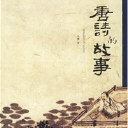
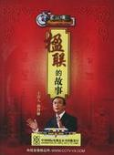
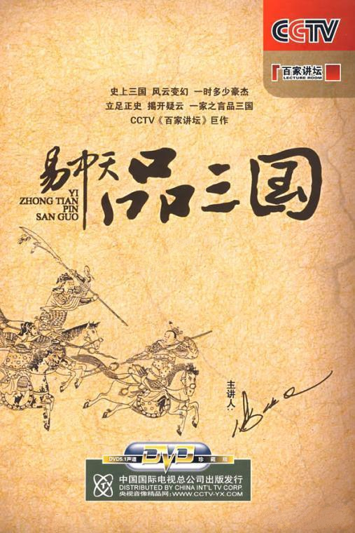
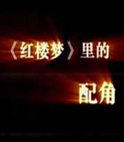
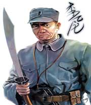
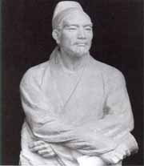
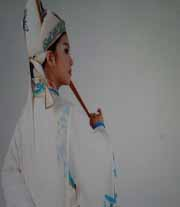
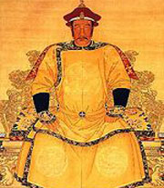
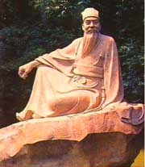
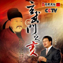

百家讲坛 唐诗的故事
介绍：

百家讲坛 从悲到喜说西厢
介绍：

百家讲坛 楹联的故事
介绍：

百家讲坛 易中天品三国
介绍：
《易中天品三国》，央视CCTV-10历史演播类节目，《百家讲坛》系列之一。主讲人易中天，还原真实曹操，替周瑜辩诬，正说诸葛亮，重评司马懿。纵论天下，闲话三分。细品是非功过，总结成败得失。厦门大学易中天教授将以故事说人物，以人物说历史，以历史说文化，以文化说人性...

百家讲坛 《红楼梦》里的配角_下
介绍：
《红楼梦》里描写了几百个人物，除主要人物外，一些看似微不足道的小人物也栩栩如生，不同凡响。

百家讲坛 另类英雄李云龙
介绍：
俗话说，军人以服从命令为天职。可是，电视剧《亮剑》中的主人公李云龙却经常抗命，把上级的指示当成耳旁风。但令人感到奇怪的是，就是这样一个人，领导依然器重他，友军特别佩服他，敌人格外重视他。更令人感到纳闷的是，李云龙的缺点表现得异常明显，他没有什么文化，非常粗鲁...

百家讲坛 汉代风云人物_下
介绍：

百家讲坛 《西厢记》中的爱情
介绍：
天下父母无不希望儿女生活幸福，可是《西厢记》里老夫人为何不让莺莺和自己的心上人张生谈恋爱呢，那么莺莺的丫鬟红娘又如何设计把老夫人引入陷阱，从而成就一段美好姻缘的呢？

百家讲坛 鲁迅
介绍：
原名周樟寿后改周树人(1881年9月25日－1936年10月19日），文学家、思想家和革命家，鲁迅的精神被称为中华民族魂，并且是中国现代文学的奠基人之一。浙江绍兴人（祖籍河南省正阳县），原名周樟寿、字豫才。母亲鲁瑞、父亲周伯宜。后改字为豫才。

百家讲坛 陆游
介绍：
陆游（1125年11月13日-1210年1月26日）字务观，号放翁，汉族，越州山阴（今浙江绍兴）人。南宋爱国诗人，著有《剑南诗稿》、《渭南文集》等数十个文集存世，自言“六十年间万首诗”，今尚存九千三百余首，是我国现有存诗最多的诗人。

百家讲坛 唐伯虎
介绍：
“唐伯虎点秋香”的故事可称得上是家喻户晓，人们把唐伯虎描写成有八个老婆、风流成性的公子哥儿，历史上的唐伯虎真的是这样吗？流传至今的一些关于唐伯虎的风流韵事到底是真是假？唐伯虎“三笑点秋香”是否确有其事？他的“江南第一风流才子”称号又从何而来呢...

百家讲坛 明亡清兴六十年
介绍：
明亡清兴的60年，是中国历史上天崩地解、山谷陵替、格局剧变、悲欢离合的时代。在明亡清兴的历史舞台上：格局，雄伟壮阔；人物，群星灿烂；事件，繁复跌宕；故事，生动有趣。人们都在表现，也都在表演：真与假、善与伪、美与丑，智与愚、勇与怯、廉与贪……

百家讲坛 慈禧_上部
介绍：
随着一声婴儿的啼哭，一个女人来到了这个世界上，她就是慈禧，晚清最高权力统治者，从17岁选秀入宫到朝纲专制的皇太后，她何以在男人统治的世界里夺得最高权力，在后宫嫔妃血腥的争斗中，她又是怎么走向皇太后宝座的呢？

百家讲坛 于丹《论语》心得
介绍：
于丹为观众讲述的就是这样的孔子，一位链接了多彩世界的灰色孔子。链接是广泛的，东西南北，古今中外。主题却是单纯的，单纯到没有色彩，没有性别，没有时间和空间，只有温度。以白话诠释经典，以经典诠释智慧，以智慧诠释人生，以人生诠释人性，以人性安顿人心，体悟经典的普适智慧


百家讲坛 苏轼
介绍：

百家讲坛 唐史系列01_玄武门之变
介绍：
这是一千多年前的一次政变,玄武门前,刀光剑影,短兵相接,秦王李世民从这里走向了皇权的最高峰,开创了后来贞观之治的盛世；这也是一千多年前的一次惨剧,玄武门前,兄弟相残,人性异化,秦王李世民通过政变夺得了最高权力,在他心里，也留下了阴影...